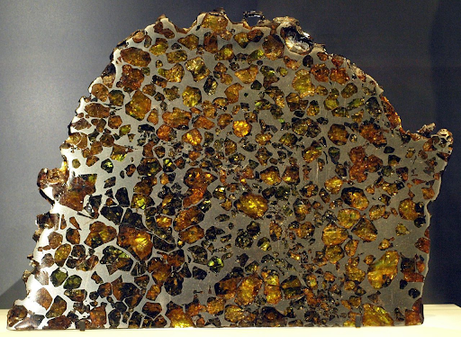
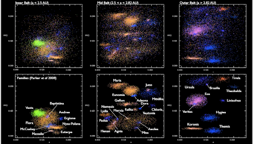
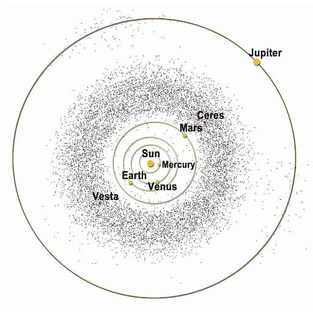

Exploring the Asteroid Belt: Venturing into the Solar System's Past and Future
- July 2, 2024
- Admin
- 3 Comments
Introduction.
The asteroid belt, a vast region of space between the orbits of Mars and Jupiter, has fascinated scientists and science fiction enthusiasts for centuries. Spanning millions of kilometers,
this celestial neighborhood contains countless rocky bodies and remnants from the early solar system's formation, holding vital clues to our solar system's origins.
When we gaze at the night sky, we often imagine a serene emptiness dotted with twinkling stars. However, the reality is much more intriguing. Between Mars and Jupiter orbits a vast
collection of rocky and metallic debris known as the asteroid belt, which separates the terrestrial planets from the gas giants.
A Dusty Past: The Birth of the Asteroid Belt
Around 4.6 billion years ago, our solar system began as a swirling disk of gas and dust called the protoplanetary disk. As gravity pulled this material together, larger bodies
formed, eventually becoming the planets we know today. However, the region between Mars and Jupiter had a different fate. The immense gravitational influence of Jupiter
disrupted the growth of any protoplanets in this zone, leading to collisions between smaller bodies. These collisions shattered them into fragments, which spread
across the orbit between Mars and Jupiter, forming the asteroid belt.
Exploring the Asteroid Belt
Space agencies worldwide are actively exploring the asteroid belt. Several spacecraft missions have visited asteroids, studying their composition and providing valuable data.
The Dawn mission, for instance, orbited the asteroids Vesta and Ceres, revealing fascinating details about their geology and formation. The largest asteroid in the belt,
Ceres, stands out as a dwarf planet with a diameter of approximately 940 kilometers. Discovered in 1801 by Italian astronomer Giuseppe Piazzi, Ceres comprises roughly
one-third of the total mass of the asteroid belt. Despite its size, Ceres accounts for only a small fraction of the total number of asteroids, with the vast majority
being much smaller in comparison.
The asteroid belt may not be as glamorous as distant galaxies or colossal gas giants, but it holds a unique place in our solar system's history. By studying these
leftover building blocks, we gain a deeper understanding of our cosmic origins and the processes that shaped the planets. The asteroid belt is a testament to the
dynamic and violent birth of our solar system, and a reminder that even in the vast emptiness of space, there are stories waiting to be discovered.
The Composition of the Asteroid Belt
The present-day asteroid belt consists primarily of three categories of asteroids:
- C-type (carbonaceous) asteroids
- S-type (silicate) asteroids
- X-type (metallic) asteroids
S-type asteroids, rich in silicates, are more common in the inner region of the belt, within 2.5 AU of the Sun. Their surfaces reveal the presence of silicates and
some metals, but no significant carbonaceous compounds, indicating significant modification from their original composition. M-type (metal-rich) asteroids are
typically found in the middle of the main belt and make up the remainder of the total population. Their spectra resemble iron-nickel, and some are believed
to have formed from the metallic cores of differentiated bodies disrupted by collisions. E-type asteroids, thought to have enstatite (MgSiO3) surfaces,
form a large proportion of asteroids inward of the asteroid belt, known as the Hungaria asteroids.

Asteroids contain abundant precious metals such as gold, zinc, and platinum. However, mining these resources poses significant challenges. Rockets would need
to carry large amounts of fuel to travel to and return from the asteroid belt, making remote mining operations costly. Additionally, refining ore on-site or
shipping raw ore back to Earth presents logistical difficulties.
The Mystery of V-Type Asteroids
One mystery is the relative rarity of V-type (Vestoid) or basaltic asteroids in the asteroid belt. Theories of asteroid formation predict that objects the size of Vesta or larger should
form crusts and mantles composed mainly of basaltic rock. However, observations suggest that 99% of the predicted basaltic material is missing. Until 2001, most basaltic bodies in the
asteroid belt were believed to originate from Vesta, but the discovery of the asteroid 1459 Magnya revealed a different chemical composition, suggesting a different origin. Further
discoveries of asteroids in the outer belt with differing basaltic compositions reinforce this hypothesis.
The Temperature and Orbits of Asteroids
The temperature of the asteroid belt varies with distance from the Sun. Typical temperatures for dust particles range from 200 K (-73 °C) at 2.2 AU to 165 K (-108 °C) at 3.2 AU. Due to
rotation, the surface temperature of an asteroid can vary considerably as different sides are exposed to solar radiation and then the stellar background.
Most asteroids within the belt have orbital eccentricities of less than 0.4 and inclinations of less than 30°. The asteroid belt reaches a maximum concentration at an eccentricity around 0.07 and an
inclination below 4°. Although a typical asteroid has a relatively circular orbit and lies near the plane of the ecliptic, some asteroids have highly eccentric orbits or travel well outside the ecliptic plane.
Collisions and Dust Bands
The high population of the asteroid belt makes it a very active environment where collisions between asteroids occur frequently. Evidence suggests that most main belt asteroids between 200 m and 10 km in diameter
are rubble piles formed by collisions. Along with the asteroid bodies, the belt contains bands of dust with particle radii of up to a few hundred micrometers. This fine material is produced from collisions
between asteroids and micrometeorite impacts. The Poynting-Robert effect causes this dust to slowly spiral inward toward the Sun.
Families and Groups
Approximately one-third of the asteroids in the asteroid belt are members of asteroid families. These families share similar orbital elements and spectral features, indicating a common origin from the breakup
of a larger body. There are about 20 to 30 confirmed asteroid families and additional less certain groupings. Smaller associations of asteroids are called groups or clusters. Some of the most prominent
families in the asteroid belt are the Flora, Eunomia, Koronis, and Themis families.

As our technology advances, we can expect even more detailed exploration of the asteroid belt. Robotic missions will continue to unravel the mysteries of this dynamic region, probing the origins of the
solar system and searching for clues to our cosmic origins. Efforts to mitigate the threat of asteroid impacts will remain a priority, ensuring the safety and security of our planet.
Conclusion:
The asteroid belt stands as a testament to the enduring legacy of our solar system's formation. From its beginnings as a swirling cloud of dust and gas to its current role as a frontier
for scientific discovery and resource exploration, the asteroid belt serves as a window into both the past and future of our cosmic neighborhood. As we continue to explore and study this
fascinating region, we gain a deeper understanding of our place in the universe and the forces that have shaped our planet and others like it.
